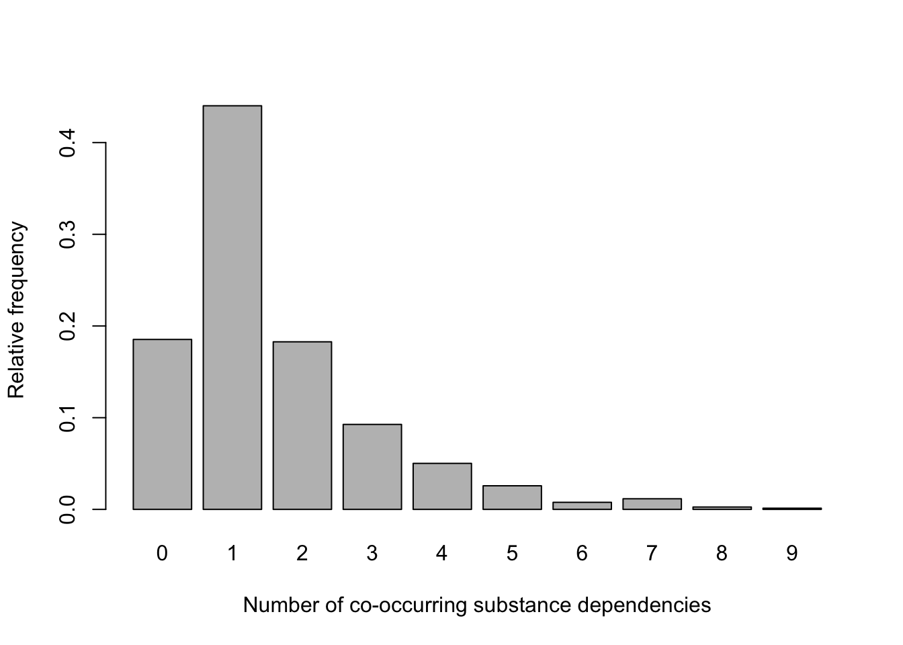
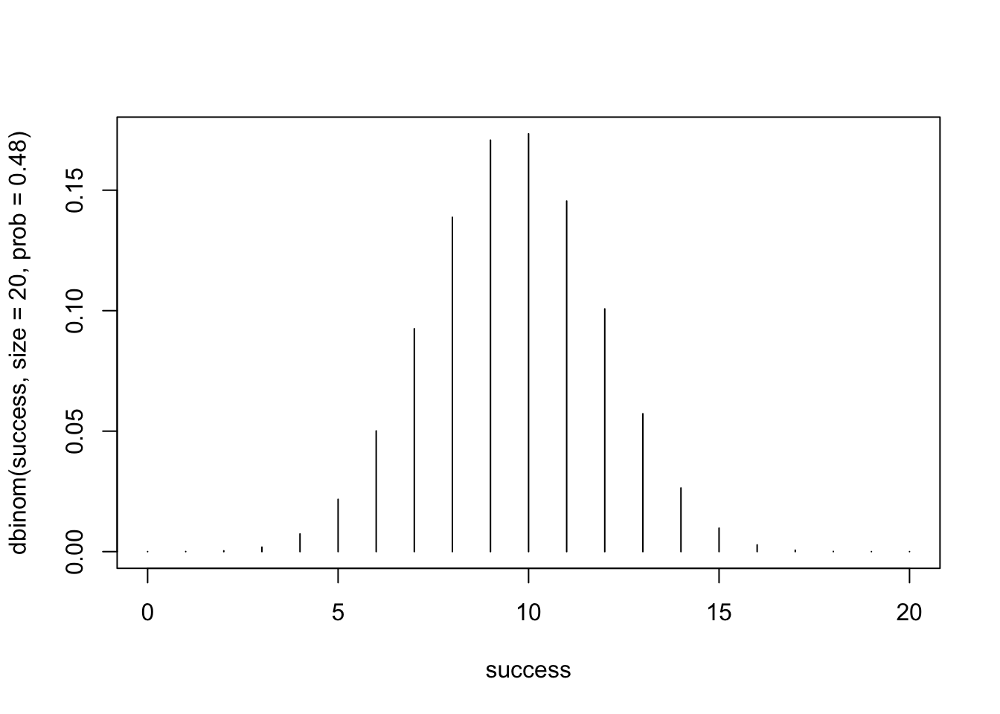
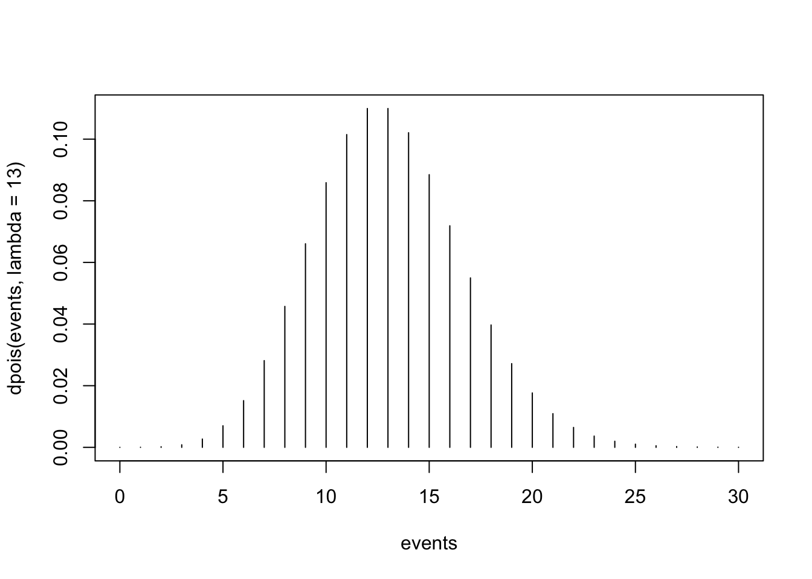
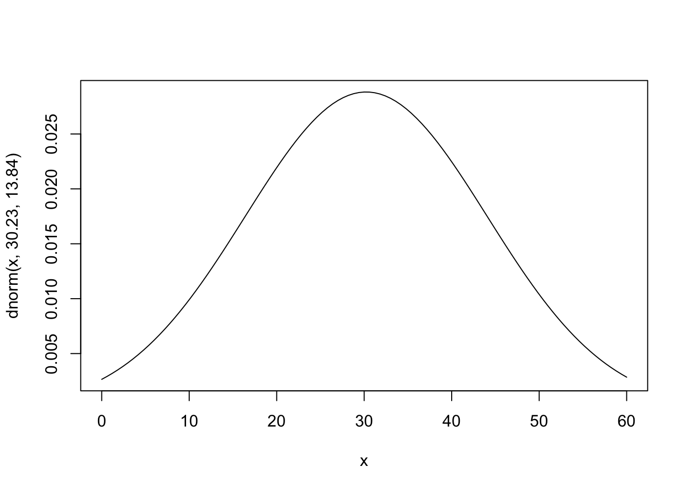

Jenny Wagner, PhD, MPH
Department of Public
Health
California State University, Sacramento
Probability distributions are a fundamental concept in statistics and public health research. They describe how the values of a random variable are distributed, information which gives us a mathematical framework to quantify uncertainty and make predictions about data. In simpler terms, a probability distribution shows the likelihood of different outcomes for a given variable. In the real world, they are used to describe patterns in health-related data - for example, the distribution of disease incidence, patient wait times, or the effectiveness of interventions.
There are two main types of probability distributions, discrete and continuous probability distributions, discussed below.
Discrete probability distributions are used for variables that can take on a finite or countable number of distinct values (i.e., for discrete random variables). Each value has a specific probability associated with it. For example, the number of new cases of a disease reported in a week is a discrete variable, as it represents a count (e.g., 0, 1, 2, …). We will focus on two commonly used discrete probability distributions:
Continuous probability distributions are used for variables that can take on an infinite number of values within a given range (i.e., for continuous random variables). Probabilities are represented as areas under a curve, as the probability of any single exact value is effectively zero (because, again, these variables can take on an infinite number of values). For example, body mass index (BMI) is a continuous variable, as it can take on any value within a realistic range (e.g., 18.5, 24.7). The most commonly used continuous probability distribution is the Normal distribution, which is widely used to model data in public health and is considered the most important probability distribution in statistics.
A solid understanding of probability distributions will be important a we move toward statistical methods like estimation and hypothesis testing in the coming weeks.
After completing Lab 3, you will be able to:
Lab 3 is divided into two parts. Part 1 focuses on discrete probability distributions based on real data, like the example discussed in this week’s lecture video. For Part 1 you will use the dataset called “substances.csv” which you can download from Canvas. Part 2 focuses on theoretical probability distributions - specifically, the Binomial, Poisson, and Normal distributions. For Part 2 you will not need any data files. Rather, we will apply R functions that already contain information about these theoretical distributions to given public health scenarios.
When you are ready to start Lab 3:
.Rmd file in a folder
dedicated to Lab 3 materials.Part 1 is based on the following scenario: Suppose patients who were involved in a problem gambling treatment program were surveyed about co-occurring drug and alcohol addictions. Let the discrete random variable ‘X’ represent the number of co-occurring addictive substances used by the subjects. The dataset labeled “substances.csv” contains two variables:
In this Lab we will continue to work with functions contained within the ‘tidyverse’ package. We will also use functions from the ‘stats’ package, which may be new for you. If you have not previously installed this package, copy and paste the following into your Console (bottom-left window), then click Enter or Return to execute the code:
install.packages("stats")Once you have installed the new package, load the required packages
using the library() function as follows:
Set your working directory using the setwd() function
(see Assignment Guidelines for detailed instructions).
setwd("YOUR FILE PATH HERE")Use the read.csv() function to import the
“substances.csv” data file. Remember that this file must be saved in the
working directory you specified in the above step.
Note: Sometimes when importing a CSV file into RStudio, a
column called ‘X’ is added to the dataset to identify the observation
number. My personal preference is to drop this column, which is what the
%>% select(-X) part of the code above is doing. If you
ever notice that an ‘X’ column is added to your dataset, you can use the
same code to remove it. But again, this is a personal preference. We
could choose leave the ‘X’ column in the dataset if we wanted to; it’s
not hurting anything.
After running the above code chunk, you should see an object called
data in your Environment window with 777 observations and 2
variables (defined above).
To construct a discrete probability distribution for the number of co-occurring substance addictions, we first need to create a table showing the frequency and relative frequency for this discrete distribution as follows:
# construct frequency table and save it as a new dataframe
subs <- as.data.frame(table(data$substances))A brief breakdown of this code:
table(data$substances): Creates a frequency table of
the substances variable in the data dataset. The table counts the
occurrences of each unique value in the substances
variable, producing a summary of how often each substance appears.as.data.frame(): Stores the frequency table as an
object in our Environment with two columns: one column for the unique
values in substances and another column for their respective
counts.subs <- ...: Names the resulting object
subs. The subs object will now contain two
columns where:
Var1) holds the
unique values of the substances variable.Freq) holds the corresponding
frequencies (counts) of those values.Let’s click on the subs object in our Environment to see
what it looks like. We can also use the print() command as
follows to show the table in the Console (bottom-left) window:
## Var1 Freq
## 1 0 144
## 2 1 342
## 3 2 142
## 4 3 72
## 5 4 39
## 6 5 20
## 7 6 6
## 8 7 9
## 9 8 2
## 10 9 1As expected, we see two variables, Var1 (the number of
co-occurring substances) and Freq (the number of people in
our dataset with each correponding number of co-occurring
substances).
When constructing a discrete probability distribution, the goal is to
represent the likelihood of each category or value in the dataset. To do
this, we need to calculate relative frequencies, which
represent the proportion of occurrences for each category relative to
the total number of observations. For our scenario here, this means
calculating the relative frequency of each number of co-occurring
substances by dividing the frequency in each category by the total
number of observations. We can create a new variable for the relative
frequencies in our subs object as follows:
# create a new variable for the relative frequency
# relative frequency = the proportion of subjects with each number of substances used
subs <- subs %>% mutate(rel_freq = Freq/(sum(Freq)))This line of code creates a new variable called rel_freq
using the frequencies generated previously. A more detailed
explanation:
subs: This is the data frame being modified. It
contains a frequency table where one column (Freq) holds the counts for
each category.subs %>%: Passes the subs object, which
contains the frequency table, through the mutate function. Remember, the
pipe operator (we’ve seen this several times now!) is like saying “and
then”. We are telling R, “use the data in the object subs
and then create a new variable with the mutate()
function.”mutate(): A function used to create new variables or
modify existing ones in a data frame. In this case, it adds a new column
called rel_freq to the subs data frame.rel_freq = Freq / (sum(Freq)):
Freq: Refers to the column in subs that holds the raw
frequencies (counts) of each category.sum(Freq): Calculates the total frequency (i.e., the
sum of all counts in the Freq column).Freq / (sum(Freq)): Divides each frequency value by the
total frequency to compute the relative frequency for each category.
This gives the proportion of the total observations that fall into each
category.subs <-: Reassigns the modified data frame back to
the subs object, updating it with the new rel_freq column.Let’s again use the print() command to view the updated
table as follows:
## Var1 Freq rel_freq
## 1 0 144 0.185328185
## 2 1 342 0.440154440
## 3 2 142 0.182754183
## 4 3 72 0.092664093
## 5 4 39 0.050193050
## 6 5 20 0.025740026
## 7 6 6 0.007722008
## 8 7 9 0.011583012
## 9 8 2 0.002574003
## 10 9 1 0.001287001As expected, we see a new variable, rel_freq, which
tells us the relative frequency (or proportion) of the sample with each
corresponding number of co-occurring substance addictions.
Next, let’s visualize this probability distribution using the
barplot function:
# generate a simple bar chart for sex
barplot(subs$rel_freq,
xlab = "Number of co-occurring substance addictions",
ylab = "Relative frequency",
col = "gray",
names.arg = subs$Var1)
Visualizing the probability distribution in this way allows us to quickly see the most and least likely outcomes.
When we created the subs object, the discrete random
variable ‘X’ (currently labeled Var1) defaulted to a factor
variable. In previous Labs we have converted numeric variables to
factors. Here, however, it will be helpful to convert Var1
from a factor variable to a numeric variable, since we know the values
represent quantities - the number of co-occurring substance addictions -
not categories. Converting Var1 to a numeric variable will
ensure it is treated appropriately in our analyses.
We need to use a two-step process to convert a factor variable to a
numeric variable. We first need to convert the factor variable to a
“character” variable - basically, text - using the
as.character() function, then to a numeric variable using
the as.numeric() function. Very strange, I know. If we do
not first convert to a character variable, R will drop the category
corresponding to zero co-occurring substances, and we don’t want that to
happen.
# convert factor to numeric variable
subs$Var1 <- as.character(subs$Var1) # first convert to character
subs$Var1 <- as.numeric(subs$Var1)Now that we have formatted our variables appropriately, we can
calculate probabilities for specified numbers of co-occurring substance
addictions. For example, suppose we want to know the probability that an
individual selected at random uses exactly five addictive substances.
For a specific number of co-occurring substances (in this case, 5), we
can find this answer by looking directly at our discrete probability
distribution. When we look at the row where Var1 is equal
to 5, we see that rel_freq is equal to 0.025740026. This
means that the probability a randomly selected person from the sample
has 5 co-occurring substance addictions is 0.025740026, or about
2.6%.
When we want to know the probability associated with one particular value of our discrete random variable, it is easy enough to use this approach of looking at the table of relative frequencies. However, if we want to know the probability associate with a range of values, the most efficient method is to use code. Let’s walk through a few examples…
# obtain the probability of fewer than 3 co-occurring substance addictions
subs %>% filter(Var1 < 3) %>% summarise(sum(rel_freq))## sum(rel_freq)
## 1 0.8082368Here, we are taking the sum of relative frequencies where
Var1 is less than 3. A brief breakdown of this line of
code:
subs %>%: The pipe operator %>%
passes the subs object, which contains the probability
distributions, to the next function in sequence.filter(Var1 < 3): Filters the dataset, keeping only
the rows where the Var1 column has values less than 3
(i.e., rows where Var1 is equal to 0, 1, or 2 will be
retained).summarise(sum(rel_freq)): The summarise() function
creates a summary statistic for the filtered data. By nesting
sum(rel_freq) within the summarise() function,
we obtain the sum of the rel_freq column (relative
frequencies) for the filtered subset.From the output in our Console window, we find the probability that a randomly selected person from the sample uses fewer than 3 addictive substances is 0.8082368, or about 80.8%.
## sum(rel_freq)
## 1 0.01544402Here, we are taking the sum of relative frequencies where
Var1 is greater than 6. We find the probability that a
randomly selected person from the sample uses greater than 6 addictive
substances is 0.01544402, or about 1.5%.
Note: In part (a) we filtered for values of
Var1 less than 3, while here we are filtering for values of
Var1 greater than 6. Otherwise the code is exactly the
same.
## sum(rel_freq)
## 1 0.3513514This one is a little trickier. Here, we are taking the sum of
relative frequencies where Var1 is both greater than or
equal to 2 and less than or equal to 5 (in other words, where
Var1 is between 2 and 5, inclusive). We find the
probability that a randomly selected person from the sample uses between
2 and 5 addictive substances is 0.3513514, or about 35.1%.
Measures of center and spread are useful for summarizing and interpreting a discrete probability distribution. The mean, or expected value, provides the average outcome we would expect if the process were repeated many times. The variance measures how spread out the values are around the mean, which provides insight to the variability or uncertainty in the distribution. The standard deviation, as the square root of the variance, provides a more interpretable measure of spread in the same units as the original variable (in this case, the number of co-occurring substance addictions).
We can use the following to obtain the mean, variance, and standard deviation of this discrete probability distribution:
## [1] 1.572716## [1] 2.095543## [1] 1.447599We find the mean number of co-occurring substance addictions is approximately 1.57; this represents the average number of co-occurring addictions we expect across the population at-hand. We find the variance and standard deviation are 2.095543 and 1.447599, respectively. These measures of spread give us a sense of how spread out the values are around the mean and are particularly useful when comparing the spread across different populations.
So far in Lab 3, we’ve explored a discrete probability distribution based on real data by calculating key measures like relative frequencies, the mean, variance, and standard deviation. We can use this concrete example to help us understand how probability distributions are used to summarize and describe patterns in data.
Next, we’ll shift our focus to theoretical probability distributions — specifically, the Binomial, Poisson, and Normal distributions. These distributions are widely used in public health to model and predict outcomes in scenarios where we don’t have all the data but need to make informed decisions. By working with these distributions, we can calculate probabilities for specific events, explore relationships between variables, and gain deeper insight into uncertainty and variability in public health contexts. Let’s see how these tools allow us to answer practical probability questions and ultimately support evidence-based decision-making. We will use a different public health scenario for each probability distribution.
As discussed in the Introduction section above, the Binomial distribution is used to model the number of successes in a fixed number of independent trials, where each trial has the same probability of “success”. Remember from lecture that the terms “success” and “failure” are arbitrary - a “success” does not necessarily mean a positive outcome. For example, in public health, we are often studying disease outcomes, and “success” might correspond to the occurrence of disease or death.
To calculate probabilities using the Binomial distribution, you need three key values:
Let’s apply the Binomial distribution to the following scenario…
Suppose, based on data collected by the Centers for Disease Control and Prevention (CDC), an estimate of the percentage of adults who have at some point in their life been told they have hypertension is 48.1% percent. The Binomial distribution can be used if the sample size (n) is less than 10% of the population size (N), i.e., n/N ≤ 0.10. Assume for our scenario that ‘N’ is sufficiently large relative to ‘n’ that the binomial distribution may be used to find the desired probabilities.
Suppose we select a simple random sample of 20 U.S. adults and assume
that the probability that each has been diagnosed with hypertension is
0.48. We will use this information to answer each of the probability
questions below. For these items, we will use two R functions,
dbinom() and pbinom():
dbinom(): This function is used to find the probability
for a specific number of successes in a given number of trials.
The syntax is dbinom(x, n, p) where x = number
of successes, n = number of trials, and p =
probability of success.pbinom(): This function is used to find the
cumulative probability up to a specific number of successes. In
other words, pbinom() gives us P(X <= x). The syntax is
pbinom(x, n, p) where, again, x = number of
successes, n = number of trials, and p =
probability of success.In this case, the sample size (n) is 20, the number of successes of
interest (x) is 8, and the probability of “success” (i.e., that a person
has been diagnosed with hypertension) is 0.48. We can apply the
dbinom() function as follows:
# find probability that 8 out of 20 adults will have been diagnosed with hypertension
dbinom(8, 20, 0.48)## [1] 0.1387513From the output in the Console window, we find the probability that exactly 8 out of 20 adults will have been diagnosed with hypertension is 0.1387513, or about 13.9%.
In this case, the sample size (n) is, again, 20, the number of
successes of interest (x) is all values less than 8 (i.e., 0 to
7), and the probability of “success” (i.e., that a person has been
diagnosed with hypertension) is, again, 0.48. We can apply the
pbinom() function as follows:
# find probability that fewer than 8 out of 20 adults will have been diagnosed with hypertension
pbinom(7, 20, 0.48)## [1] 0.1739206Remember, the pbinom() function gives us the
cumulative probability up to the specified number of successes.
So, by specifying x=7, we are telling R to give us the probability of 7
successes, plus the probability of 6 successes, plus the probability of
5 successes, and so on, all the way to 0. In this case, we find the
probability of fewer than 8 (i.e., 7 or fewer) out of 20 adults will
have been diagnosed with hypertension is equal to 0.1739206, or about
17.4%.
Since the pbinom() function will give us the probability
that 7 or fewer have been diagnosed with hypertension, as we carried out
in part (b) above, we can subtract this probability from 1 to get the
probability that 8 or more of the 20 will have been diagnosed
with hypertension.
# find probability that 8 or more out of 20 adults will have been diagnosed with hypertension
1 - pbinom(7, 20, 0.48)## [1] 0.8260794In this case, we find the probability of 8 or more out of 20 adults will have been diagnosed with hypertension is equal to 0.8260794, or about 82.6%.
Finally, to find the probability of a range of successes (e.g., 8 to
12 successes, as in this example) in a binomial distribution, we add
together the probabilities for each individual number of successes
within that range. Instead of summing them manually, we can use the
cumulative probability function pbinom() to make this
process easier. Specifically, we calculate the cumulative probability
for the upper limit of the range (e.g., P(X≤12)) and subtract the
cumulative probability just below the lower limit (e.g.,
P(X≤7)). This gives the total probability for the range P(8≤X≤12).
# find probability that between 8 and 12 (inclusive) out of 20 adults will have been diagnosed with hypertension
pbinom(12, 20, 0.48) - pbinom(7, 20, 0.48)## [1] 0.7291661We find the probability that between 8 and 12 (inclusive) out of 20 adults will have been diagnosed with hypertension is equal to 0.7291661, or about 72.9%.
The mean (μ=n⋅p) of a binomial distribution represents the expected number of successes in a given number of trials, which provides a sense of the central tendency of the distribution. It tells us what we can typically expect to happen if the process is repeated many times. The variance (σ2=n⋅p⋅(1−p)) measures the variability of the distribution, giving us a way to quantify how much the number of successes is likely to deviate from the mean on average. Together, these values help us understand both the average outcome and the spread of possible outcomes.
For our scenario, suppose we want to find the mean and variance of the number of people diagnosed with hypertension in samples of size 20. A straightforward way to do this is to apply the mean and variance formulas shown above, using R as a simple calculator.
## [1] 9.6## [1] 4.992We find the expected number of people to have been diagnosed with hypertension in a sample of 20 is 9.6, with a variance of 4.992.
Finally, visualizing the Binomial distribution for a given scenario such as this helps us understand the probability of different outcomes at a glance. It provides a picture of where most of the probability is concentrated, showing the likely range of successes and how extreme outcomes are distributed. We can visualize the Binomial distribution for our scenario (in which the sample size is 20 and probability of success is 0.48) as follows:
# define the range of successes as 0 to 20 for the purposes of our plot
success <- 0:20
# plot the Binomial distribution
plot(success, dbinom(success, size=20, prob=0.48), type = 'h')
The resulting plot shows the Binomial probability distribution for n=20 trials and a success probability (p) of 0.48. We can interpret this plot as follows:
As discussed previously, the Poisson distribution models the number of events occurring in a fixed interval of time and space, assuming the events occur independently and at a constant average rate. To use the Poisson distribution, you need:
Let’s apply the Poisson distribution to the following scenario…
In a certain population, an average of 13 new cases of esophageal
cancer are diagnosed each year. Suppose the annual incidence of
esophageal cancer follows a Poisson distribution. We will use this
information to answer each of the probability questions below. For these
items, we will use two R functions, dpois() and
ppois():
dpois(): This function is used to find the probability
that exactly ‘x’ number of events occur within the time period.
The syntax is dpois(x, λ), where ‘x’ is the number of
events of interest, and ‘λ’ is the mean.ppois(): This function gives the cumulative
probability that ‘x’ or fewer events occur within the time period.
The syntax is ppois(x, λ), where, again, ‘x’ is the number
of events of interest, and lambda is the mean.## [1] 0.08587015From the output in the Console, we find that, when the mean incidence is 13 cases annually, the probability that exactly 10 cases of esophageal cancer are diagnosed in a given year is 0.08587015, or about 8.6%.
## [1] 0.4631047We find that, when the mean incidence is 13 cases annually, the probability that 12 or fewer cases of esophageal cancer are diagnosed in a given year is 0.4631047, or about 46.3%.
## [1] 0.9459718We find that, when the mean incidence is 13 cases annually, the probability that 8 or more cases of esophageal cancer are diagnosed in a given year is 0.9459718, or about 94.6%.
# find probability that between 9 and 15 (inclusive) cases of esophageal cancer will be diagnosed
ppois(15, 13) - ppois(8, 13)## [1] 0.663849We find that, when the mean incidence is 13 cases annually, the probability that between 9 and 15 (inclusive) cases of esophageal cancer are diagnosed in a given year is 0.663849, or about 66.4%.
As with our plot of the Binomial distribution above, plotting the Poisson distribution can help us understand where the highest probabilities are concentrated. In other words, the plot can give us a quick idea of the most likely outcomes. We can visualize the Poisson distribution for our scenario (in which the mean number of events is 13) as follows:

The resulting plot shows the Poisson probability distribution for the number of events (X) ranging from 0 to 30, with an average rate (λ) of 13. Here’s how to interpret the plot:
Finally, the Normal distribution is a continuous probability distribution often used to model data that are symmetrically distributed around a mean. To calculate probabilities using the Normal distribution, you need:
For example, the Normal distribution can be used to estimate the likelihood of an individual’s BMI falling within a specific range in a population. By specifying the population mean BMI (μ), the standard deviation (σ), and the range of interest (x), you can determine the probability of the outcome.
Remember, unlike the Binomial and Poisson distributions, which are discrete, the Normal distribution is continuous. This means that probabilities are not associated with specific values of X but rather with ranges of values. Since the Normal distribution has an infinite number of possible values within any interval, the probability of any single exact value of X is essentially zero. Instead, we calculate probabilities for a range of values by finding the area under the standard normal curve between two points.
Let’s apply the Normal distribution to the following scenario…
One of the variables collected in Birth Registry data is pounds
gained during pregnancy. According to data from the entire registry for
2021, the number of pounds gained during pregnancy was approximately
normally distributed with a mean of 30.23 pounds and a standard
deviation of 13.84 pounds. We will use this information to answer each
of the probability questions below. For these items, we will need only
one R function, pnorm():
pnorm(): This function gives the cumulative
probability that a random variable ‘X’ takes a value less than or
equal to ‘x’. The syntax is pnorm(x, mean, sd).# find probability that a randomly selected mother gained less than 15 pounds
pnorm(15, 30.23, 13.84)## [1] 0.1355716From the output in the Console, we find the probability that a randomly selected mother in 2021 gained less than 15 pounds during pregnancy is 0.1355716, or about 13.6%.
# find probability that a randomly selected mother gained more than 40 pounds
1 - pnorm(40, 30.23, 13.84)## [1] 0.2401174We find the probability that a randomly selected mother in 2021 gained more than 40 pounds during pregnancy is 0.2401174, or about 24.0%.
# find probability that a randomly selected mother gained between 15 and 40 pounds
pnorm(40, 30.23, 13.84) - pnorm(15, 30.23, 13.84)## [1] 0.6243109We find the probability that a randomly selected mother in 2021 gained between 15 and 40 pounds during pregnancy is 0.6243109, or about 62.4%.
Visualizing the Normal distribution associated with a given scenario can help us understand the distribution of values and predict probabilities for ranges of interest. We can visualize the Normal distribution for our scenario as follows:

The plot shows the Normal distribution with a mean (μ) of 30.23 and a standard deviation (σ) of 13.84. Here’s how to interpret the plot:
In Lab 3, we explored theoretical probability distributions, including the Binomial, Poisson, and Normal distributions. Probability distributions are essential in public health for modeling uncertainty, estimating disease risk, and predicting health outcomes in populations. They help us understand the likelihood of events such as the spread of infectious diseases, the probability of treatment success, or the expected number of emergency room visits. While these concepts may feel abstract, they provide the foundation for everything we do in statistical inference — like helping us estimate population parameters, assess variability, and determine the likelihood of different outcomes. While we won’t focus heavily on probability theory in this course, this foundational knowledge will be important as we move into statistical inference, including confidence interval estimation, hypothesis testing, and regression analysis.
When you are ready, please submit the following to the Lab 3 assignment page on Canvas:
.Rmd extension.html filePlease reach out to me at jenny.wagner@csus.edu if you have any questions. See you in class!